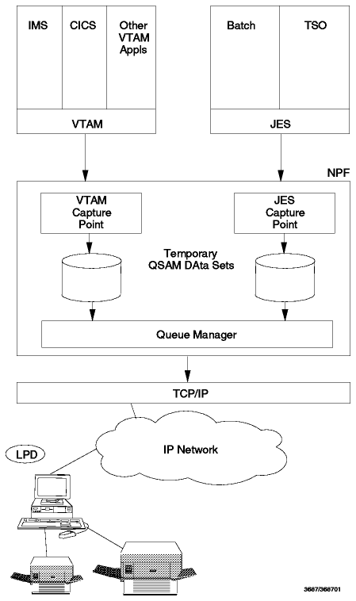

Table of Contents
Table of Contents  AIX/6000
AIX/6000The Line Printer Daemon protocol is an informational protocol. Its status is limited use. The current specification is in RFC 1179. Note that this RFC does not specify an Internet standard. However, the function has been part of UNIX systems for a long time (in uucp).
The LPR client and server functions are supported by VM TCP/IP.
The server runs in the LPSERVE virtual machine and allows you to print on local (VM printer or punch), remote (for example, a printer attached to an OS/2 workstation and managed by an LPR server) or RSCS printers. The RSCS printers can be connected to the RSCS subsystem in the same system as the LPSERVE virtual machine or to a remote RSCS. In the latter, the remote host does not need to have TCP/IP installed, but the two VM systems must be connected via RSCS.
Using the LPR server function on a VM system, it is possible to submit a job on an MVS system, if the VM and MVS system are connected. Once again, the MVS system does not need TCP/IP. MVS will send the job output back to the LPSERVE VM user ID (this can be overridden with the /*ROUTE PUNCH VM.USER and /*ROUTE PRINT VM.USER parameters where VM is the node ID of the VM system and USER is the user ID that will receive the output). It is not possible to route the output back to the originating workstation.
Both the LPR (client) and LPD (server) functions are supported by MVS TCP/IP.
The LPD (server) runs in a separate address space in your MVS system. It listens on TCP port 515. The printers supported can be locally attached, NJE network-attached or remotely attached to another TCP/IP LPD server.
The following LPR (client) user commands are available:
Please refer to IBM TCP/IP Version 3 Release 1 for MVS: User's Guide for more details.
The Network Print Facility allows users to send print output to LPD print servers on the TCP/IP network. JES2 and JES3 output and VTAM SNA character stream (SCS or LU type 1) and 3270 data stream output (LU types 0 and 3) may be printed on the TCP/IP network printers.
Note: The NPF feature has to be ordered separately. There is no extra
charge.

Figure: NPF Overview
Please refer to IBM TCP/IP Version 3 Release 1 for MVS: Network Print
Facility for more details.
The LPR client and LPD server functions are supported by OS/400.
The print server application consists of:
The print server function uses TCP/IP port number 515. Each print request consists of three parts:
The print client opens the printer port 515 on the remote host, and then sends lines of text to the server, first the control file, followed by the data file(s).
This product implements the IBM Advanced Function Printing (AFP) capabilities to the RISC System/6000.
You can move data, manage resources, and provide connectivity to AIX, UNIX, MVS, VM, OS/2, OS/400 and DOS environments by using TCP/IP and Network File System (NFS) protocols. With the lpr command you can submit print jobs from the afore-mentioned environments. The use of networked resources allows you to maintain print resources on the system where they were created and attach them with NFS to the PSF/6000 server with the NFS mount command. For example, overlays created with Overlay Generation Language/370 (OGL/370) and existing in MVS system libraries or on a Conversational Monitoring System (CMS) minidisk can be remotely mounted for use with PSF/6000 by means of NFS.
For more detail please refer to IBM Print Services Facility/6000: Print Services Facility for AIX Users.
The LPR client and LPD server functions are supported by TCP/IP for OS/2.
The following commands are available:
TCP/IP for DOS provides both the client (LPR) and server (LPD) functions.
The LPR, LPQ, LPRM and LPRMON commands are supported. Please refer to IBM TCP/IP Version 2.1.1 for DOS: User's Guide for more details.
 BOOTstrap
Protocol - BOOTP
BOOTstrap
Protocol - BOOTP